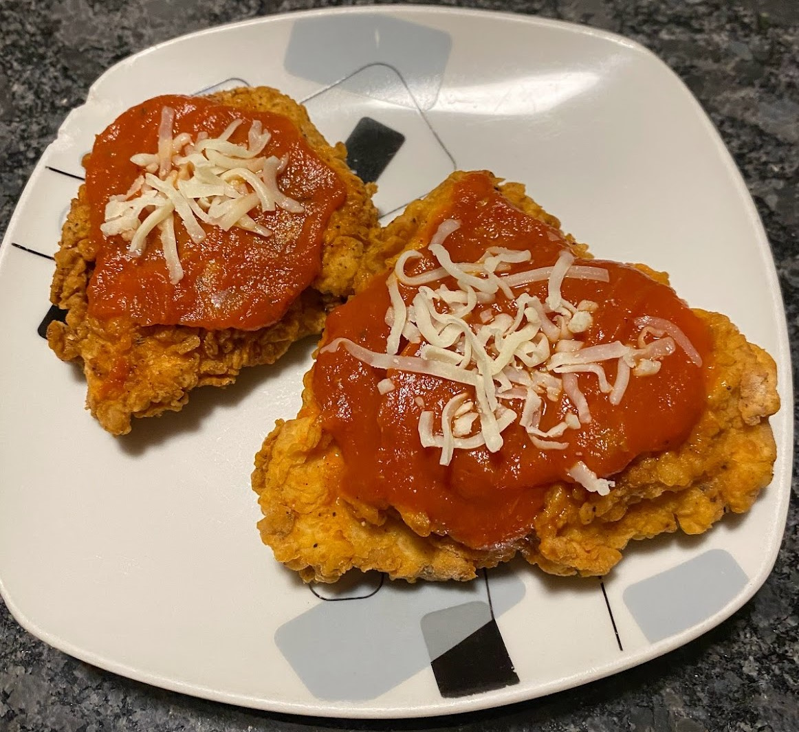
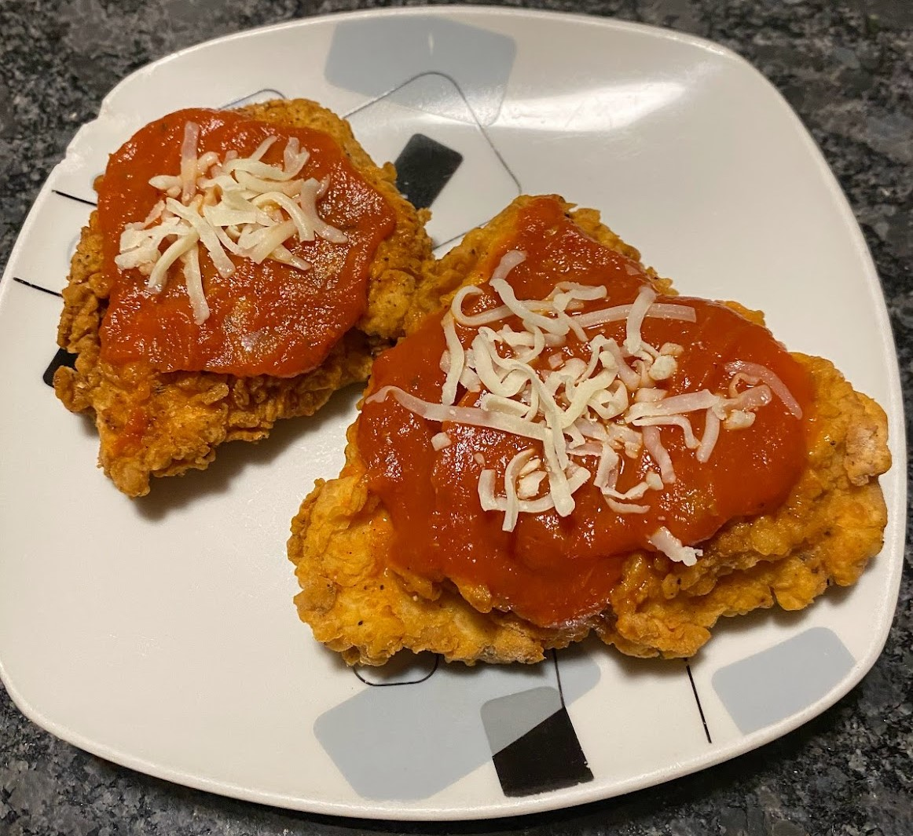

This is my favorite chicken recipe! If you know me, you know I LOVEEE chicken :D. I've used fried chicken from this recipe to make chicken parmesan, chicken sandwich, and chicken pasta. My inspiration for this recipe was solely because I love Arby's chicken bacon swiss sandwich, so I just HAD to recreate it :).
 


Ingredients:
-
General:
- Chicken breast
- 3-4 cups vegetable oil (depending on size of pan)
- 2-3 eggs (depending on how many outer layers you want your chicken to have) Batter:
- 1 cup flour
- ½ salt
- ½ tsp ground black pepper
- ½ tsp garlic powder
- ½ tsp onion powder
- ½ tsp paprika
- (optional) spicy seasoning if you want spice!
Instructions:
- Debone the chicken breast and slice the chicken horizontally to create thinner pieces.
- Take a large bowl to combine all the dry ingredients.
- Add the flour, salt, ground black pepper, garlic powder, onion powder, and paprika all into the large bowl. If you want your chicken to be spicy, add in some of the spicy seasoning you have!
- Mix everything together, trying your best to evenly distribute all the components throughout the flour.
- Crack the two eggs into a separate bowl and beat them.
- Take one piece of chicken and place it in the dry ingredients bowl. Cover the entire piece with the dry mixture.
- Submerge the piece of chicken into the egg bowl, making sure to cover the entire piece again.
- Repeat steps 6 and 7 two times. You can repeat more times if you want the coating to be more thick. Do the same for the rest of your pieces of chicken, beating in more eggs into the egg bowl as needed.
- Time to prep your frying station! Take a pan that is at least 3-in deep and pour in enough vegetable oil that fills up half the pan.
- Turn your stove on MEDIUM heat and wait for the oil to heat up. You’ll know when it’s ready when you dip a wooden spoon into the oil and there are bubbles forming around it.
- Gently place your pieces of chicken into the oil (don’t throw it or it’ll splash!) and flip after 4-5 minutes. You should notice the chicken looks golden brown before removing it from the oil. I like to keep it in there a little longer and flip it every once in a while just to be safe.
- Have a plate ready with paper towels on top to transfer your freshly fried chicken onto. Your fried chicken is now ready to serve! You can add some marinara sauce and sprinkle some cheese, make a chicken sandwich, or eat it however you would like. Enjoy! :P